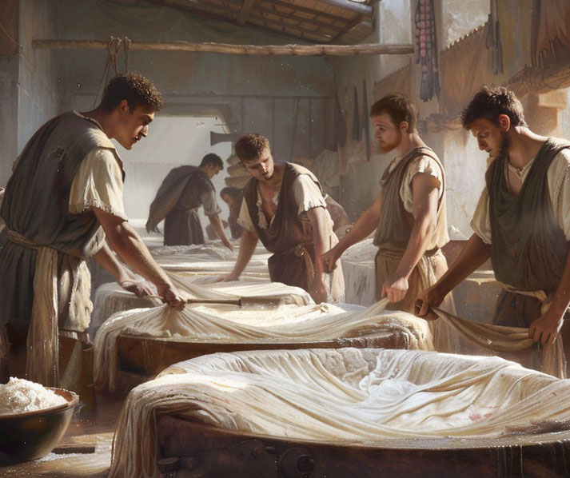

Home |
Weird Animal Facts |
Space Oddities |
Historical Suprises |
Tableau Visualizations |
Back To Main Page
Historical Surprises
Napoleon was once attacked by bunnies
During a hunting event, Napoleon's men gathered hundreds of rabbits for a grand chase. But instead of fleeing, the rabbits charged him—turns out they were tame and thought they were being fed!
Ancient Romans used urine to clean clothes
Believe it or not, Romans collected urine in public pots because it was full of ammonia—a powerful cleaning agent. They'd use it to bleach and clean garments in communal laundries called fullonicae.
